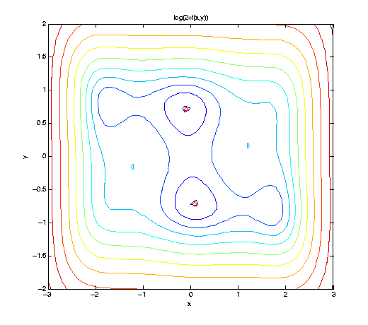

Optimization
Once a sparse grid interpolant providing a surrogate function or meta-model of an expensive to evaluate model has been obtained, a very common task to be performed is often a search for local/global minimizers or maximizers. Since version 4.0 of the toolbox, several efficient optimization methods are available to perform this task. Furthermore, it is easy to use third-party optimization codes on sparse grid interpolants.
Contents
Available algorithms
The following optimization algorithms are included with the toolbox:
- spcgsearch - suitable for optimizing polynomial sparse grid interpolants.
- spcompsearch - suitable for optimizing piecewise linear sparse grid interpolants.
- spfminsearch - works for all types of interpolants, but usually less efficient than spcompsearch or spcgsearch.
- spmultistart - a multiple random start search method that uses any of the above methods for the local searches.
Many parameters of these algorithms can be configured with an options structure created with the spoptimset function.
Optimizing piecewise linear interpolants
We consider a simple algebraic test function f, the well-known six-hump camel back function. Here, we visualize f slightly shifted and in logarithmic scaling to cleary show the 6 minima. Two minima are global, indicated by the red triangle.
f = @(x,y) (4-2.1.*x.^2+x.^4./3).*x.^2+x.*y+(-4+4.*y.^2).*y.^2; ezcontour(@(x,y) log(2+f(x,y)), [-3 3 -2 2], 51); hold on; plot([ 0.08984201 -0.08984201], [-0.71265640 0.71265640], 'r^');
We construct a sequence of piecewise linear interpolants, and optimize them by the spcompsearch function in each step. Here, we use a maximum of N = 705 points, as used by the Clenshaw-Curtis grid of level nmax = 5, to approximate the (global) minimum.
nmax = 7; z = []; range = [-3 3; -2 2]; f_exact = -1.0316284535 warning('off', 'MATLAB:spinterp:insufficientDepth'); tic; for n = 1:nmax spoptions = spset('MinDepth', n, 'MaxDepth', n, 'PrevResults', z, ... 'KeepFunctionValues', 'on'); z = spvals(f,2,range,spoptions); [xopt, fval, exitflag, output] = spcompsearch(z,range); disp([' grid pnts: ' sprintf('%3d', z.nPoints) ... ' | optim fevals: ' sprintf('%3d', output.nFEvals) ... ' | fval: ' sprintf('%+5f', fval) ... ' | abs. error: ' num2str(abs(f_exact-fval))]); end toc; warning('on', 'MATLAB:spinterp:insufficientDepth');
f_exact = -1.0316 grid pnts: 5 | optim fevals: 8 | fval: +0.000000 | abs. error: 1.0316 grid pnts: 13 | optim fevals: 8 | fval: +0.000000 | abs. error: 1.0316 grid pnts: 29 | optim fevals: 12 | fval: -0.750000 | abs. error: 0.28163 grid pnts: 65 | optim fevals: 12 | fval: -0.984375 | abs. error: 0.047253 grid pnts: 145 | optim fevals: 20 | fval: -0.986956 | abs. error: 0.044672 grid pnts: 321 | optim fevals: 20 | fval: -1.026468 | abs. error: 0.0051603 grid pnts: 705 | optim fevals: 24 | fval: -1.031286 | abs. error: 0.00034234 Elapsed time is 0.641286 seconds.
Optimizing polynomial interpolants
If the objective function is smooth, polynomial interpolants are a good choice. In the example below, by using the Chebyshev-Gauss-Lobatto sparse grid, we achieve an exponential convergence rate for the considered analytic function. To further reduce the number of sparse grid points, we use a dimension-adaptive interpolant. We start with N = 5 nodes, and increase the number of nodes by about a factor of 1.5 in each step of the loop, up to about 100 points.
Nmax = 100; N = 5; z = []; warning('off', 'MATLAB:spinterp:maxPointsReached'); tic; while N <= Nmax spoptions = spset('MinPoints', N, 'MaxPoints', N, 'PrevResults', z, ... 'GridType', 'Chebyshev', 'DimensionAdaptive', 'on', ... 'KeepFunctionValues', 'on'); z = spvals(f,2,range,spoptions); N = round(z.nPoints .* 1.5); [xopt, fval, exitflag, output] = spcgsearch(z,range); disp([' grid pnts: ' sprintf('%3d', z.nPoints) ... ' | optim fevals: ' sprintf('%3d', output.nFEvals) ... ' | fval: ' sprintf('%+5f', fval) ... ' | abs. error: ' num2str(abs(f_exact-fval))]); end toc; warning('on', 'MATLAB:spinterp:maxPointsReached');
grid pnts: 5 | optim fevals: 1 | fval: +0.000000 | abs. error: 1.0316 grid pnts: 11 | optim fevals: 9 | fval: +0.000000 | abs. error: 1.0316 grid pnts: 17 | optim fevals: 20 | fval: -0.537875 | abs. error: 0.49375 grid pnts: 29 | optim fevals: 29 | fval: -1.031628 | abs. error: 1.9134e-11 grid pnts: 53 | optim fevals: 30 | fval: -1.031628 | abs. error: 1.924e-11 grid pnts: 85 | optim fevals: 30 | fval: -1.031628 | abs. error: 1.9262e-11 Elapsed time is 1.146093 seconds.
A high-dimensional example
Let us look at the optimization of a higher-dimensional function. We consider again the function trid.m that was already used to illustrate the dimension-adaptive algorithm:
type('trid.m');
function y = trid(x) % TRID Quadratic function with a tridiagonal Hessian. % Y = TRID(X) returns the function value Y for a D- % dimensional input vector X. % % The test function is due to Arnold Neumaier, listed % on the global optimization Web page at % http://www.mat.univie.ac.at/~neum/glopt/ d = length(x); y = sum((x-1).^2) - sum(x(2:d).*x(1:d-1));
We let d=100, and compute the known exact minimal value for comparison:
d = 100; range = repmat([-d^2 d^2],d,1); f_exact = -d*(d+4)*(d-1)/6
f_exact =
-171600
For high-dimensional problems, it is important to use dimensional adaptivity. Note that here, as well as in the examples above, we use the KeepFunctionValues property to indicate that the function values obtained during the sparse grid construction should be retained in order to save time when selecting a good start point for the search.
options = spset('DimensionAdaptive', 'on', ... 'DimadaptDegree', 1, ... 'FunctionArgType', 'vector', ... 'RelTol', 1e-3, ... 'GridType', 'Chebyshev', ... 'KeepFunctionValues', 'on'); Nmax = 40000; N = 2*d; z = []; warning('off', 'MATLAB:spinterp:maxPointsReached'); tic; xopt = []; fval = []; while N <= Nmax spoptions = spset(options, 'MinPoints', N, ... 'MaxPoints', N, 'PrevResults', z); z = spvals(@trid,d,range,spoptions); z = sppurge(z); spoptoptions = spoptimset('TolFun',1e-6); [xopt,fval,exitflag,output] = spcgsearch(z,range,spoptoptions); N = round(z.nPoints .* 2); disp([' grid pnts: ' sprintf('%5d', z.nPoints) ... ' | optim fevals: ' sprintf('%4d', output.nFEvals) ... ' | fval: ' sprintf('%+9.1f', fval) ... ' | abs. error: ' num2str(abs(f_exact-fval))]); end toc; warning('on', 'MATLAB:spinterp:maxPointsReached');
grid pnts: 201 | optim fevals: 11 | fval: -0.0 | abs. error: 171600 grid pnts: 443 | optim fevals: 29 | fval: -18.0 | abs. error: 171582 grid pnts: 923 | optim fevals: 48 | fval: -132.0 | abs. error: 171468 grid pnts: 1883 | optim fevals: 93 | fval: -537.0 | abs. error: 171063 grid pnts: 3899 | optim fevals: 117 | fval: -1202.0 | abs. error: 170398 grid pnts: 7889 | optim fevals: 188 | fval: -3293.0 | abs. error: 168307 grid pnts: 16043 | optim fevals: 248 | fval: -10725.9 | abs. error: 160874.1483 grid pnts: 32477 | optim fevals: 305 | fval: -171600.0 | abs. error: 5.6811e-08 Elapsed time is 188.371965 seconds.
Using third-party optimization algorithms
Instead of using the optimization algorithms provided with the Sparse Grid Interpolation Toolbox, you can also use third-party optimization methods. In the following example, we use fmincon from The Mathwork's Optimization Toolbox on spsurfun to optimize the sparse grid interpolant obtained in the last step of the loop from the example above.
optimsetoptions = optimset('GradObj','on', ... 'LargeScale','off'); [xopt,fval,exitflag,output] = fmincon(@(x) spsurfun(x,z), ... range(:,1)+range(:,2))/2,[],[],[],[],range(:,1),range(:,2), ... [], optimsetoptions); disp([' grid pnts: ' sprintf('%5d', z.nPoints) ... ' | optim fevals: ' sprintf('%4d', output.funcCount) ... ' | fval: ' sprintf('%+9.1f', fval) ... ' | abs. error: ' num2str(abs(f_exact-fval))]);
Optimization terminated: magnitude of directional derivative in search direction less than 2*options.TolFun and maximum constraint violation is less than options.TolCon. No active inequalities grid pnts: 32477 | optim fevals: 5711 | fval: -171600.0 | abs. error: 1.1176e-07